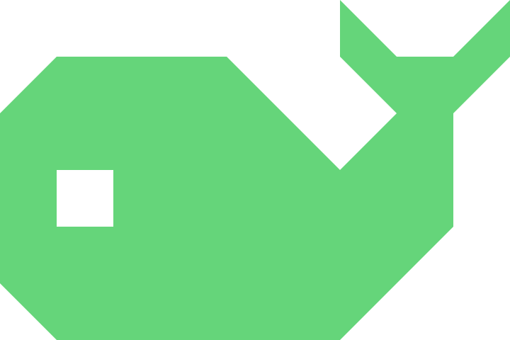
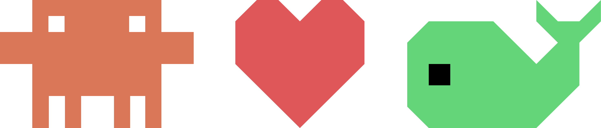

Containers
Real-time CPU and memory. Start, stop, restart, drop into an interactive shell, and tail logs with substring search.
- s start/stop
- r restart
- e exec shell
- l logs
- d delete

tinydContainers, images, volumes, networks — and now local AI models via Docker Model Runner. All managed with a keystroke, no browser tabs, no memorized flags. Just a beautifully minimal TUI that adapts to any pane.
Five tabs. Live stats. Deep inspection. In-app chat with local AI
models. tinyd treats Docker the way top treats
processes — fast, focused, fluent.
Real-time CPU and memory. Start, stop, restart, drop into an interactive shell, and tail logs with substring search.
Layer-by-layer composition, architecture, exposed config. Spawn new containers via an interactive modal — name, ports, env, and a volume picker (existing, new named, or bind mount). Pull from Docker Hub or re-pull the latest tag in one keypress.
First-class support for Docker Model Runner. Pull local LLMs from
the ai/ namespace, pick a variant by params and
quant, then chat with them in a full-screen streaming transcript —
all without leaving the terminal.
See exactly which containers are attached, driver options, usage — and delete safely with inline Yes/No confirmation.
Topology at a glance. IPv4 / IPv6 subnets, driver and scope, connection state — for when port-mapping math gets hairy.
Adapts to any terminal size, with a min of 60 columns × 13 rows. Resize your VS Code split, drop into a tmux pane, or SSH into a remote Docker host — the layout reflows without a restart. Auto-detects your light/dark terminal background, and lets you toggle columns per-tab with v.
Switch tabs — including the new Models tab. The interface is keyboard-only and proud of it.
Designed for macOS, Linux and Windows on amd64 and arm64, in Go. The Models tab builds on the public Docker Model Runner interface.
# tinyd was released as open source in 2026 and is
# now archived. This page is the case study: the interface,
# the flows and the decisions. No downloads.$ export DOCKER_HOST=tcp://host:2376
$ ./tinydMost letter keys are case-insensitive. ? or Shift+H opens help any time.
tinyd is an experiment in what happens when a designer hands the keys to an AI pair-programmer and asks for the smallest possible Docker Desktop. The result: a little terminal app that boots in milliseconds and stays out of your way.
